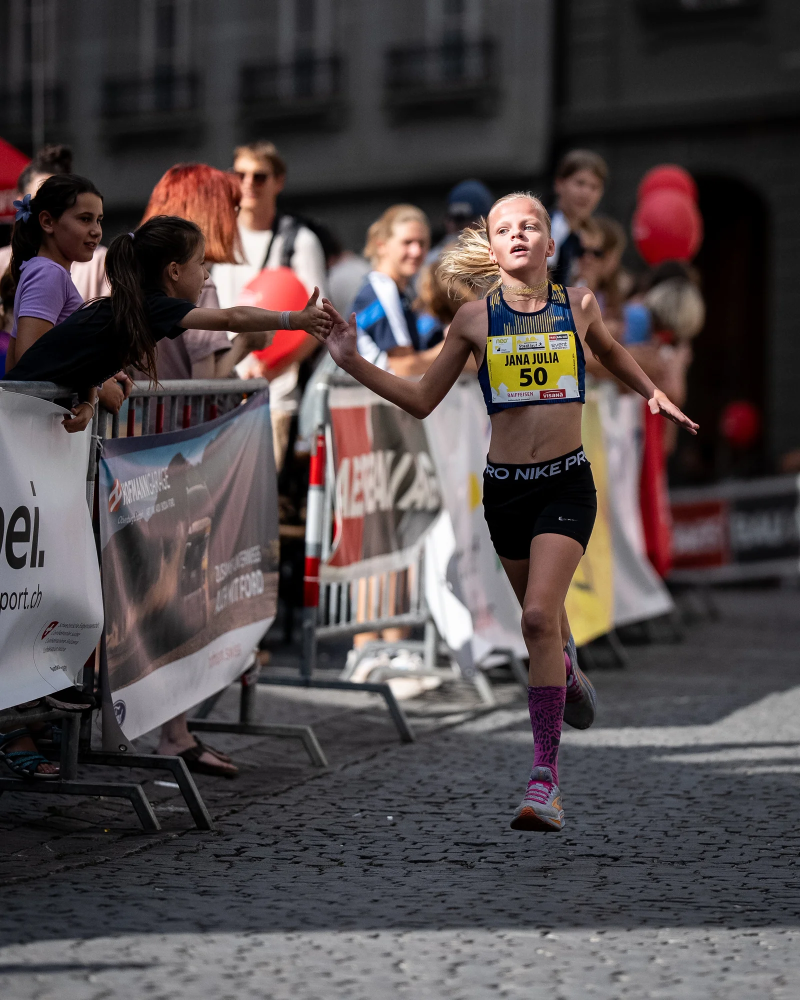
01
Running
Bahnrennen über 600 und 1'000 m sowie Strassen- und Stadtläufe.
My Pace. My Dreams.
Mein Verein: LV Langenthal www.lvl.ch
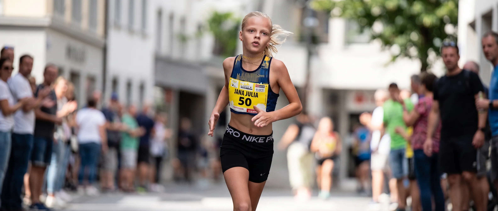
Young Swiss Running & Triathlon Girl
Jana Julia Kramer
Meine sportliche Reise – Schritt für Schritt.
Mit Freude und Ehrgeiz gehe ich meinen Weg – vom Laufen auf der Bahn bis zum Triathlon.
Meine Website und mein Online-Auftritt werden von meinen Eltern betreut.
Mille Gruyère Final
1'000 m · W10
Zofingen 2026
Bären GP Bern
W11 · 1,6 km · 6:24.03
Two sports. One passion.

Bahnrennen über 600 und 1'000 m sowie Strassen- und Stadtläufe.
My Pace. My Dreams.
Mein Verein: LV Langenthal www.lvl.ch
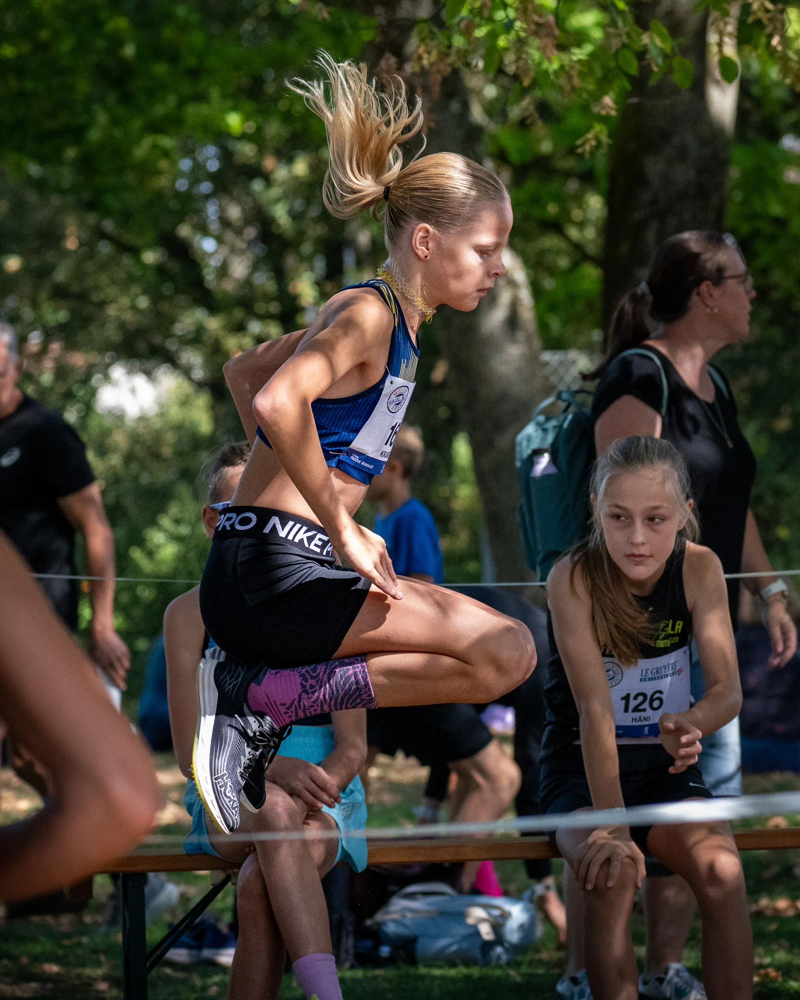
Abwechslungsreiches Gelände. Bei jedem Wetter.
Different ground. Same passion.
Mein Verein: LV Langenthal www.lvl.ch
Vom Wasser aufs Rad und auf die Laufstrecke.
Three disciplines. One challenge.
Mein Verein: TRI Team Oensingen www.triteam.ch
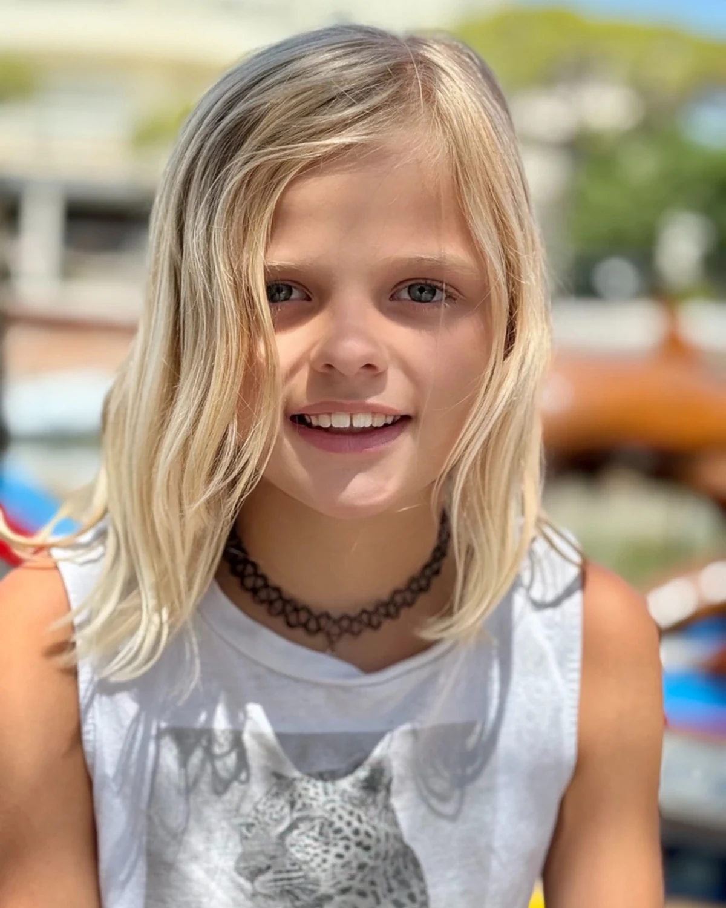
Hi! Ich bin Jana Julia (Jahrgang 2016). Ich liebe es, Vollgas zu geben, Neues auszuprobieren und mit einem Lächeln an der Startlinie zu stehen.
Meine Lieblingsdisziplinen? Die 600 und 1'000 Meter auf der Bahn, schnelle Strassen- und Stadtläufe oder im Winter das Cross Country. Ach ja, Triathlon finde ich auch cool – da kann ich gleich drei Sportarten miteinander verbinden!
Mein Ziel ist es, jeden Tag dazuzulernen, meine Grenzen zu verschieben und dabei nie den Spass am Sport zu verlieren.
Small Steps. Big Dreams. ♡
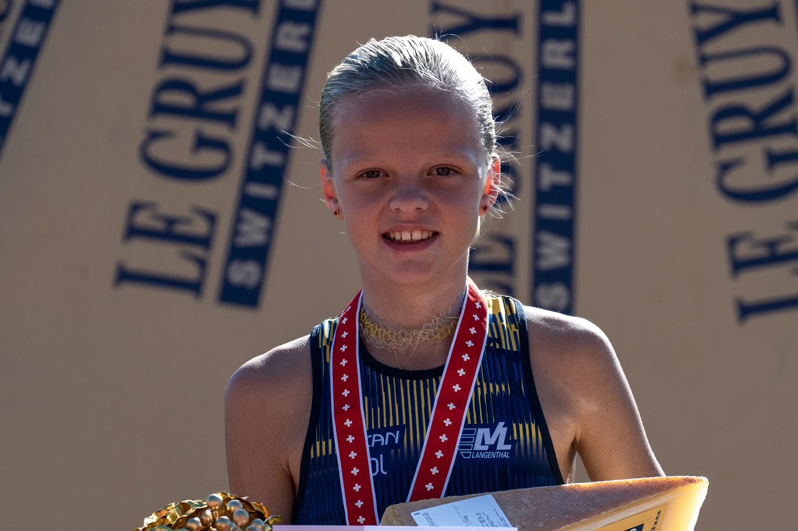
011. Rang3:21.74
Beim Schweizer Final Mille Gruyère durfte ich mir über 1'000 Meter den Titel Swiss Champion W10 sichern. Was für ein Rennen – und was für ein Moment!
First title. A memory to keep.
1. Rang1:48.38
Mit einem starken Schlussspurt sicherte ich mir den Sieg – mit drei Zehnteln Vorsprung! Mit 1:48.38 stellte ich eine neue Bestzeit auf.
Trust my race. Finish strong.
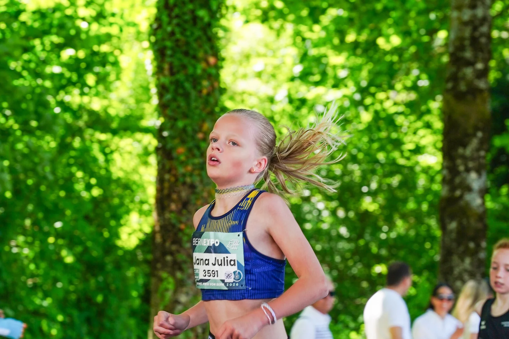
031. Rang6:24.03
Trotz eines Sturzes am Start kämpfte ich mich zurück und gewann die Kategorie W11.
Get up. Go again.
Every race counts. Every step matters.
Finde hier meine Wettkampfresultate aus Bahnrennen, Strassen- und Stadtläufen, Cross Country und Triathlon.
| Datum | Anlass | Ort | Disziplin | Kategorie | Rang | Resultat-Link |
|---|
Für diese Auswahl gibt es noch keine Resultate.
Thank you for your support. Let's grow together.
Fresh energy. Natural spirit.
Sommertee begleitet mich langfristig als persönlicher Sponsor auf meinem sportlichen Weg. Gemeinsam stehen wir für Frische, natürliche Energie und Freude an Bewegung. Merci für die coole Unterstützung!
sommertee.chBuilding futures. Inspiring talent.
Mit meinem jährlichen Clubbeitrag und einem zusätzlichen Gönnerbeitrag an LV Langenthal unterstützt mich Neven Lanz Immobilien auf meinem sportlichen Weg. Danke für dieses Engagement!
nevenlanz.chNew challenges. Strong support.
OKOA übernimmt meinen Clubbeitrag im Triathlon und unterstützt mein TRI-Trainingslager. Danke für dieses Engagement!
okoa.chDu möchtest Jana auf ihrem sportlichen Weg unterstützen? Ihre Eltern freuen sich über deine Nachricht.
Together, step by step.
Meine Familie und meine Trainerinnen und Trainer bei LV Langenthal und TRI Team Oensingen sind meine beste Crew! Sie unterstützen mich auf meinem sportlichen Weg und helfen mir, Schritt für Schritt dazuzulernen. Merci vielmal für alles!
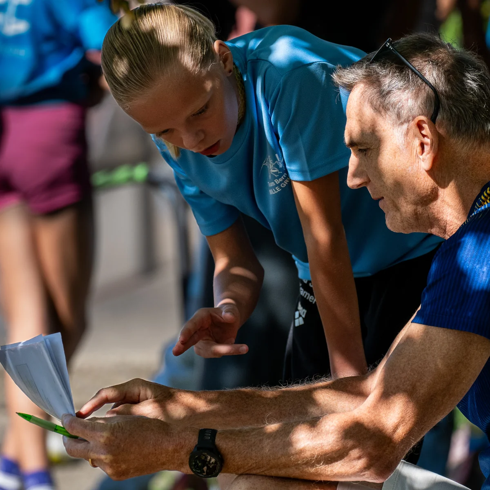
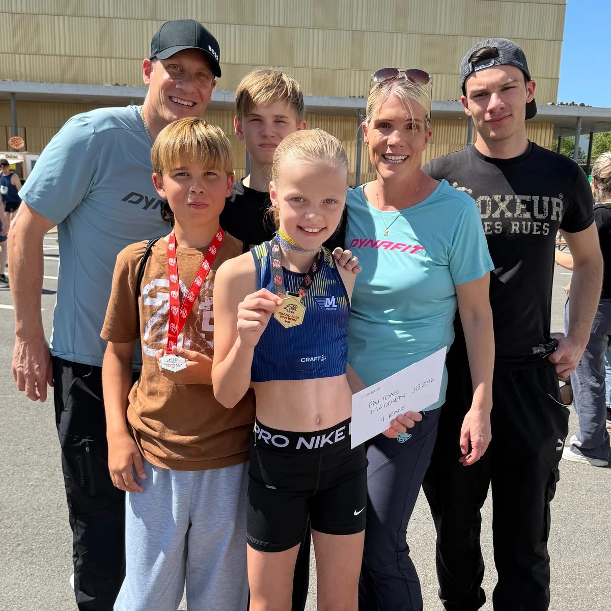
Jana in den Medien
Ausgewählte Presseberichte über meine Rennen und Erfolge.
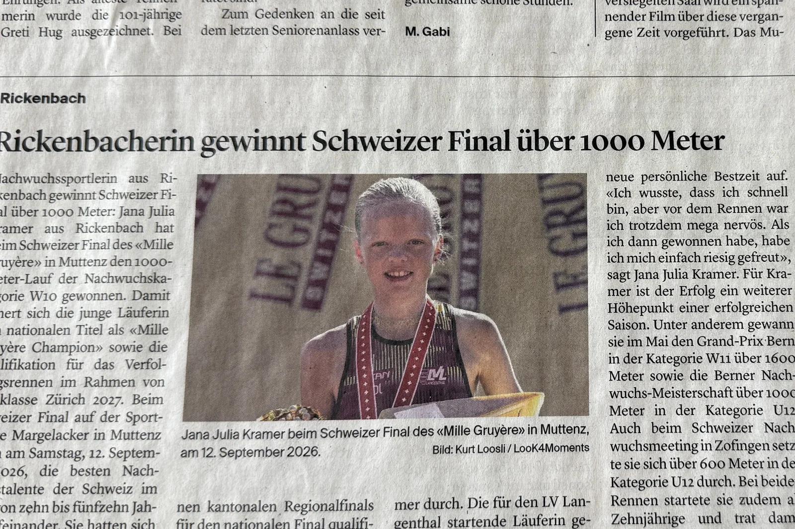
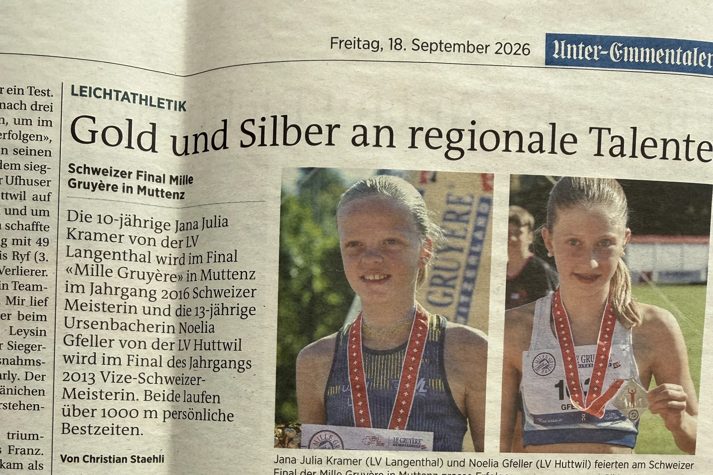
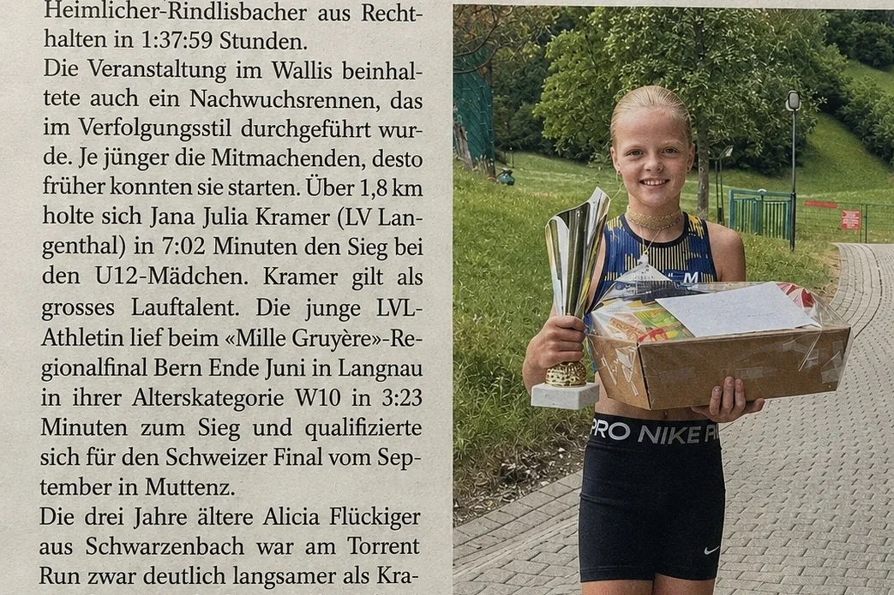